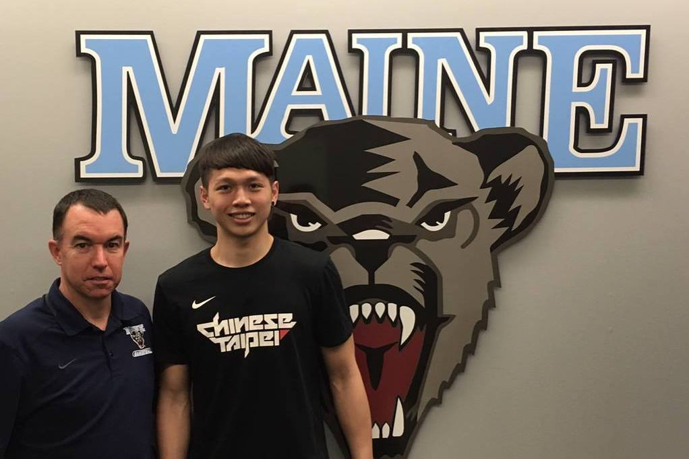
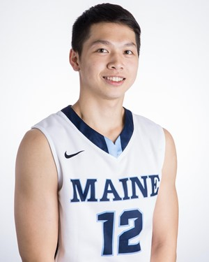
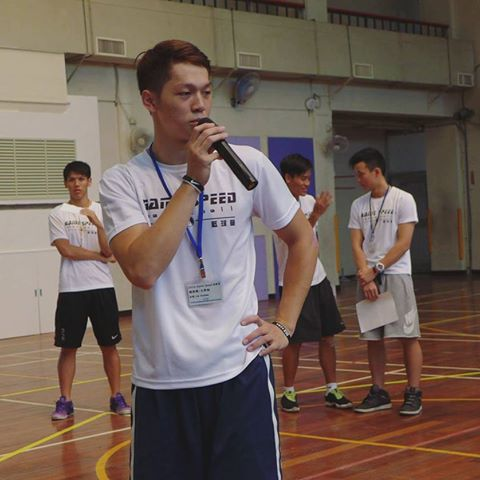

<!DOCTYPE hyml> 
<h1> Lu Hsiang Wang</h1>
<table> 

<html>

</tr>

<head>
	<title>Lu Wang-cousin of Bruce Lee</title>
	<link href="styles.css" rel="stylesheet">
<link href="https://fonts.googleapis.com/css?family=Gloria+Hallelujah|Permanent+Marker" rel="stylesheet">

Hey guys...
this is <B><U>me</B></U> talking to you. 
<p>

	<p><h3>	You can call me<i> Lewis</i> or<i> Lu</i>. </p></h3>
		<p><i>	Master at <i>Kong FU</i></P>
<p>
<B>University of Maine</p>
<i>Men's Basketball team #12</p></i></B>
<B>Freshman / Class of 2021</B>
<p><h2>Intro:</h2>
<p>Welcome to my web site homies! I'm a basketball player, a kong fu master, a real Asian born and raised in Taiwan, and a perfect student athlete. As you see I'm now playing basketball for the University of Maine, 
 and I am the third Taiwanese ever to play in NCAA Division 1 basketball.
 
 <p>You will be able to understand more about me in this website. Take your time, and enjoy my story. </p>
<p>   
<html>
<h1>Basketball</h1>
I've dedicated most of my time in training, practicing, and playing in order to become a better basketball player.
I started to play basketball when I was 10, and I fell in love with it since then. 
<p>If you want to know my accomplishments or what awards I've earned in basketball, click <u><i>here</u></i></p>
<p>
<nav>
Social Media:
<li>Facebook: Lewis Wang 
<li> Inatagram: lw6101</li>
<li> Snapchat: lewiswang03</li> </nav>
<p> Videos about me 
<nav> 
<li><A href="https://www.youtube.com/watch?v=6Ub3tB6mNhQ&t=144s">Highlight tape from high school</A> </li>
<li><A href="https://www.youtube.com/watch?v=Jl2-FVGICsU"> Documentary </A> </li>

<h1><UL></h1> Where I come from - Howmetown </h1>
<li><B><A Href=".lu.html"> Taiwan</A></li>
	<li><A Href="taipei.html"> Taipei City </A></p></li></UL></B>

	
